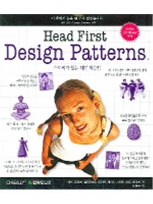

Welcome to Head First Design Patterns for C++ documentation!¶
About the C++ Source Code¶
Origin : http://hfdp-cpp.sourceforge.net/
License : AFL 3.0
Author : Glenn Puchtel
This project is copied from the sourceforge project above. I, Journeyer J. Joh, am not the original author of this project. Please refer to the url specified with Origin: above if you want to reach to the original project or author of this project.
This project on github will add POSIX build environment support and possible other enhancement will be done.
About the Story used to explain each patterns¶
{kind=link}
Origin : Korean Translation of HFDP The Original Book
License : The content of the Book is not a copy-left nor a open-source. The story explained in the book is not shown explicitly on this project’s documentaion. Only some keyword or major core concepts are introduced under the permission of one of the author, Elisabeth Robson. Because this documentation can exist only with the author’s permission, if anyone wants to add more story from the book, it’s not a good idea.
Authors : Eric T Freeman, Elisabeth Robson, Bert Bates, Kathy Sierra
Korean Translator : Hwansoo Seo
References : Forum wickedlysmart.com
Structural¶
- Proxy
You can view Doxygen Document.
You can download the UML file and open/edit it via StarUML.
Also GoF’s Design Patterns are well documented in Wikipedia.